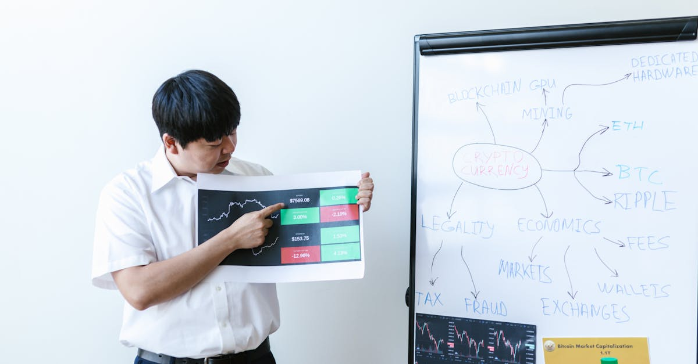

Le Phénomène Pudgy Penguins et le Déblocage du Token PENGU
Le monde des NFT et des cryptomonnaies est souvent le théâtre de mouvements aussi spectaculaires qu'imprévisibles. Récemment, la collection Pudgy Penguins, déjà bien établie dans l'écosystème, a connu une résurgence notable de son activité. Ce regain d'intérêt s'est accompagné d'une performance impressionnante du token associé, le PENGU. Cependant, cette euphorie a coïncidé avec un événement technique crucial : le déblocage (token unlock) d'une quantité significative de tokens PENGU. Ce déblocage, souvent scruté par les investisseurs, peut potentiellement introduire une pression vendeuse sur le marché, surtout si des détenteurs importants décident de réaliser leurs gains. L'analyste Bradley Park de DNTV Research a attiré l'attention sur ce point sensible, suggérant que les nouvelles positives entourant l'écosystème Pudgy Penguins ont pu fournir la liquidité de sortie idéale pour les grands détenteurs cherchant à vendre leurs jetons suite à ce déblocage. Cette dynamique soulève des questions fondamentales sur la santé du marché et la volatilité inhérente aux projets crypto, même les plus populaires. Comprendre ces mécanismes est essentiel pour tout acteur du marché, qu'il soit investisseur particulier ou gestionnaire de portefeuille algorithmique. La capacité à anticiper et à réagir à de tels événements est précisément là où l'intelligence artificielle commence à démontrer son potentiel dans le trading crypto.
👉 À lire : Michael Saylor : Nouvel Achat Bitcoin en Vue ?

Analyse du Risque de Liquidité et des Dynamiques de Marché
Bradley Park, dans son analyse, met en lumière un concept souvent sous-estimé : le risque de liquidité lors des déblocages de tokens. Lorsqu'une grande quantité de tokens devient disponible sur le marché, la demande doit impérativement suivre le rythme pour éviter une chute des prix. Dans le cas du PENGU, le rallye précédant le déblocage a pu créer un sentiment d'euphorie et de confiance, incitant les détenteurs à long terme à considérer ce moment comme opportun pour liquider une partie de leurs actifs. Park suggère que les bonnes nouvelles de l'écosystème – potentiellement des partenariats, des développements de produits ou une adoption accrue – ont servi d'amorces, attirant l'attention et générant une demande qui, paradoxalement, a offert la liquidité nécessaire aux baleines pour vendre sans provoquer un effondrement immédiat du prix. Cette stratégie, bien que potentiellement bénéfique pour les vendeurs individuels, peut laisser les nouveaux arrivants ou les détenteurs moins informés exposés à une correction ultérieure. Il est crucial de distinguer un mouvement de prix basé sur des fondamentaux solides d'une simple opportunité de sortie facilitée par un événement technique. Pour les traders, qu'ils soient humains ou automatisés, identifier cette distinction est une compétence clé.
👉 À lire : Coinbase: Le Nouveau Géant du Prime Brokerage Crypto
L'Impact des Nouvelles de l'Écosystème sur la Perception et la Liquidité
L'écosystème Pudgy Penguins a récemment été le théâtre de développements positifs qui ont indéniablement contribué à l'engouement autour du projet. Ces annonces, qu'il s'agisse de collaborations stratégiques, d'améliorations de l'expérience utilisateur ou d'une expansion de la communauté, créent une narrative haussière. Cette narrative est essentielle pour attirer de nouveaux investisseurs et renforcer la confiance des détenteurs existants. Cependant, comme le souligne Bradley Park, ces mêmes nouvelles peuvent avoir un double effet. Elles ne se contentent pas de stimuler l'intérêt et potentiellement la demande, elles fournissent également le contexte psychologique idéal pour que les détenteurs de longue date, souvent plus informés des mécanismes internes comme les token unlocks, puissent exécuter des stratégies de vente. La liquidité n'est pas seulement une question de volume d'ordres, mais aussi de volonté d'acheter. Les bonnes nouvelles créent cette volonté, offrant ainsi aux vendeurs la possibilité de sortir à des prix avantageux. Il est fascinant d'observer comment la psychologie du marché, amplifiée par des développements concrets, peut interagir avec des événements techniques pour façonner la trajectoire d'un actif numérique. Les algorithmes de trading les plus avancés tentent de modéliser ces interactions complexes.

Token Unlocks : Un Défi Constant pour les Stratégies de Trading
Le phénomène des token unlocks est une composante récurrente et souvent redoutée du marché des cryptomonnaies. Il représente la libération progressive de tokens initialement bloqués, souvent alloués aux fondateurs, aux premiers investisseurs ou aux équipes de développement. Ces déblocages sont généralement planifiés à l'avance, mais leur impact peut être significatif, surtout lorsqu'ils concernent des pourcentages importants de l'offre totale en circulation. Pour les détenteurs, cela peut signifier une opportunité de diversification ou de prise de profit. Pour le marché, cela représente un risque accru de dilution de la valeur et de pression vendeuse. Dans le cas de Pudgy Penguins et du token PENGU, le déblocage récent a mis en évidence la nécessité pour les traders de rester vigilants. Les plateformes d'analyse on-chain et les calendriers de déblocage sont devenus des outils indispensables. Les stratégies de trading doivent impérativement intégrer ces événements dans leurs modèles. Ne pas tenir compte des token unlocks majeurs revient à naviguer en eaux troubles sans carte ni boussole. C'est dans ce contexte que des solutions d'IA peuvent apporter une valeur ajoutée considérable, en surveillant en temps réel ces événements et en ajustant les positions en conséquence, minimisant ainsi les risques liés à ces phases critiques.
L'Intelligence Artificielle comme Levier dans la Gestion des Risques Crypto
Le trading de cryptomonnaies, par sa nature volatile et complexe, se prête particulièrement à l'application de l'intelligence artificielle. Des événements comme le déblocage du token PENGU et les dynamiques de marché qui en découlent illustrent parfaitement les défis auxquels sont confrontés les traders. Comment anticiper la réaction du marché à un token unlock ? Comment évaluer la véritable force d'un rallye, distinguant la spéculation de la croissance fondamentale ? Ces questions nécessitent une analyse rapide et approfondie de vastes quantités de données : données on-chain, sentiment des réseaux sociaux, actualités, et bien sûr, les calendriers de déblocage. C'est là qu'un agent IA dédié au trading crypto entre en jeu. Contrairement à un trader humain qui peut être sujet à l'émotion ou limité par le temps, une IA peut traiter ces informations en continu, 24h/24 et 7j/7. Elle peut identifier des schémas subtils, corréler des événements apparemment distincts (comme des nouvelles positives et un token unlock) et exécuter des stratégies de trading pré-définies ou adaptatives en temps réel. L'objectif n'est pas de prédire l'avenir avec certitude, mais de construire des systèmes capables de réagir de manière optimale aux conditions changeantes du marché, en intégrant des facteurs de risque tels que ceux mis en évidence par l'analyse du cas Pudgy Penguins.

Perspectives Futures pour Pudgy Penguins et le Marché des NFT
Au-delà de l'épisode spécifique du déblocage du token PENGU, l'histoire de Pudgy Penguins s'inscrit dans une tendance plus large de maturation du marché des NFT. Ce qui était autrefois perçu comme un simple univers de collection numérique évolue vers des écosystèmes plus complexes, intégrant des tokens utilitaires, des jeux, et des stratégies de propriété intellectuelle. La capacité d'un projet comme Pudgy Penguins à générer de l'enthousiasme, à développer son écosystème et à naviguer les défis techniques comme les token unlocks sera déterminante pour son succès à long terme. Les investisseurs, qu'ils soient individuels ou institutionnels, doivent faire preuve de diligence raisonnable, en analysant non seulement la communauté et l'utilité d'un projet, mais aussi sa structure économique et ses mécanismes de tokenomics. L'incident PENGU rappelle que même les projets les plus populaires ne sont pas à l'abri des dynamiques de marché classiques. Pour ceux qui cherchent à naviguer ces eaux, l'adoption d'outils avancés, y compris ceux basés sur l'IA, devient de moins en moins une option et de plus en plus une nécessité pour rester compétitif et gérer efficacement les risques dans cet espace en constante évolution.
Conclusion
Le récent rallye du token PENGU, lié aux Pudgy Penguins, et l'analyse de Bradley Park sur le risque de liquidité lors du déblocage du token, offrent une étude de cas précieuse sur la complexité du marché crypto. Ils démontrent l'interaction entre les développements d'écosystème positifs, les événements techniques comme les token unlocks, et la psychologie des investisseurs. Pour les participants du marché, il est impératif de comprendre ces dynamiques pour prendre des décisions éclairées. Pour les traders crypto, qu'ils soient novices ou expérimentés, l'intégration d'outils d'analyse sophistiqués est essentielle. C'est dans ce contexte que des solutions comme un agent IA de trading crypto, opérant 24h/24, peuvent offrir un avantage significatif en analysant en temps réel les données, en identifiant les risques potentiels et en exécutant des stratégies optimisées. L'objectif est de naviguer la volatilité inhérente au marché avec plus de précision et de contrôle, transformant les défis en opportunités potentielles.